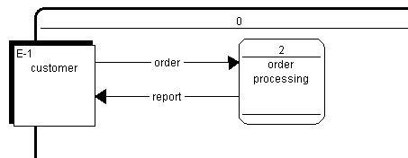

Adding external entities

The external entity’s graphic representation shows the name, the alias, the physical
name and the identifier of each of the model external entities. You can also switch
from a standard external entity to a control external entity (displayed with a dotted
line on the diagram window) by checking the Control box in the Properties window.
To add an external entity:
- Select the external entity creation tool located in the Process modeling toolbar.
- With the external entity tool selected, click anywhere inside the diagram window.
The External Entities list window contains a menu that gives access to pages linked
to each external entity. The Properties window of the external entity contains a menu
that gives information regarding the external entity and linked objects.

Properties
The Design tab of the Properties window provides the following information:
- the external entity name
- its numerical identifier, which is automatically given when you create a new
external entity but can be modified directly in this window or by renumbering
- its alias, that you can use to display another name
- its physical name
- a description
- a definition
- and if it is a control external entity.